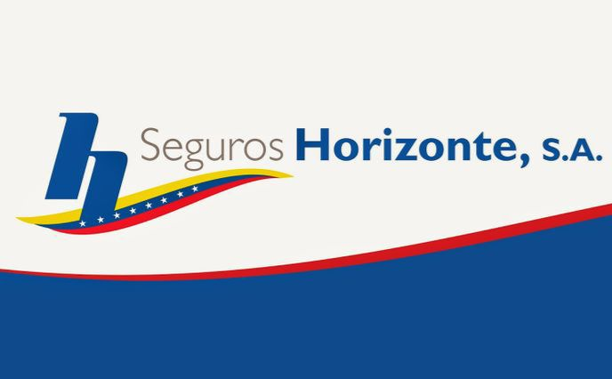
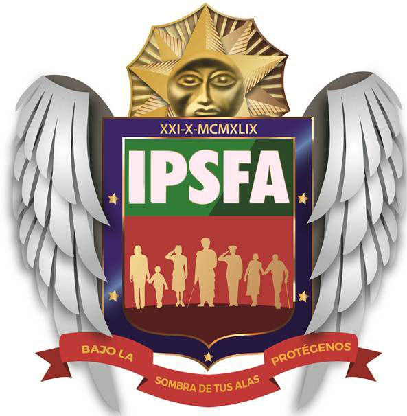

Instituciones aliadas que trabajan en sinergia con el Hospital Militar para garantizar una atención integral a nuestro personal.

Empresa aseguradora del Estado venezolano adscrita al Ministerio del Poder Popular para la Defensa
Seguros Horizonte es la empresa aseguradora del Estado venezolano adscrita al Ministerio del Poder Popular para la Defensa. Su función central es brindar respaldo financiero y protección integral a través de pólizas de seguros. Administra, principalmente, las pólizas de Hospitalización, Cirugía y Maternidad (HCM) del personal de la Fuerza Armada Nacional Bolivariana (FANB), de los trabajadores de la administración pública y de sus familiares, garantizando la cobertura de gastos médicos ante enfermedades, accidentes o emergencias.
Seguros Horizonte y el Hospital Militar operan bajo una relación de prestador de salud y ente financiador. Mientras el hospital dispone de la infraestructura, los especialistas y los equipos médicos para tratar a los pacientes, Seguros Horizonte actúa como el mecanismo de póliza que ampara a sus asegurados. Trabajan en sinergia para que el militar o funcionario público reciba la atención médica o quirúrgica necesaria en las instalaciones del hospital, gestionando la cobertura de los gastos para que el paciente tenga acceso a un tratamiento oportuno sin que esto represente un impacto económico imprevisto.

Instituto de Previsión Social de la Fuerza Armada Nacional Bolivariana
El IPSFA es el organismo del Estado venezolano encargado de administrar, coordinar y garantizar el sistema de seguridad social de la Fuerza Armada Nacional Bolivariana (FANB). Su función central es proteger y elevar la calidad de vida del personal militar (tanto en servicio activo como en situación de retiro) y de sus familiares afiliados, gestionando beneficios socioeconómicos que incluyen pensiones, créditos, bienestar y, de forma prioritaria, el derecho fundamental a la salud.
El IPSFA y el Hospital Militar trabajan como una sola red de apoyo. Mientras el IPSFA actúa como el ente administrador que asegura los recursos y derechos de los afiliados, el Hospital Militar es el brazo ejecutor o infraestructura médica donde se materializa ese derecho a la salud. Es el centro neurálgico en la región para que la población militar reciba la atención garantizada por su seguridad social.